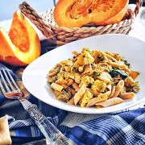
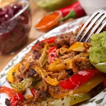

Основные блюда
Картофельное пюре
Пюре бывает картофельным, мясным, овощным или фруктовым. Это не просто масса со странными вкусом и цветом, а полноценное сытное блюдо, которое можно подать как самостоятельно, так и в качестве гарнира. Читать далее...

Лапша с тыквой и грибами
Простое и вкусное осеннее блюдо, где сладость тыквы встречается с задумчивым, почти мясным вкусом грибов, а грибное естество удачно дополняется нарядным рыжим цветом. Читать далее...

Рис с яйцом по-китайски
Не только сытное, но и сбалансированное блюдо: оно сочетает в себе углеводы, овощи и белки. Его можно подавать как самостоятельно, так и в качестве гарнира к мясу, рыбе, курице. Читать далее...

Фахита с курицей и фасолью
Фахита (фахитос, фахитас) — популярное мексиканское блюдо из мяса и овощей, нарезанных полосками и обжаренных на гриле. Читать далее...